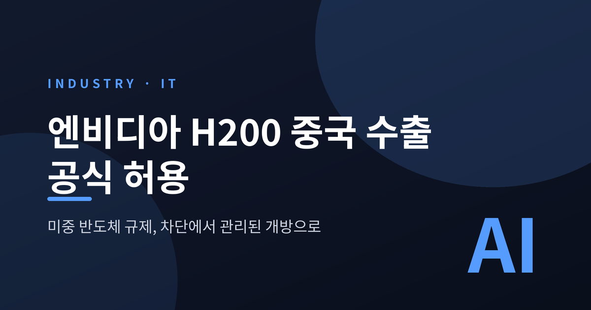
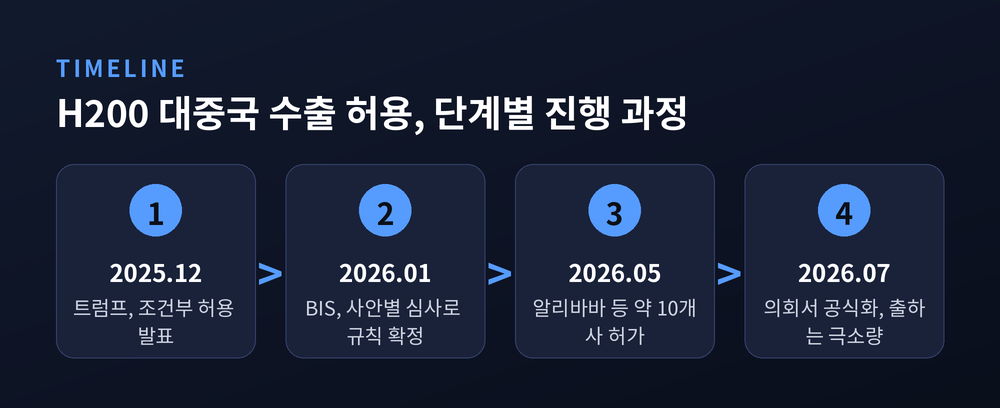
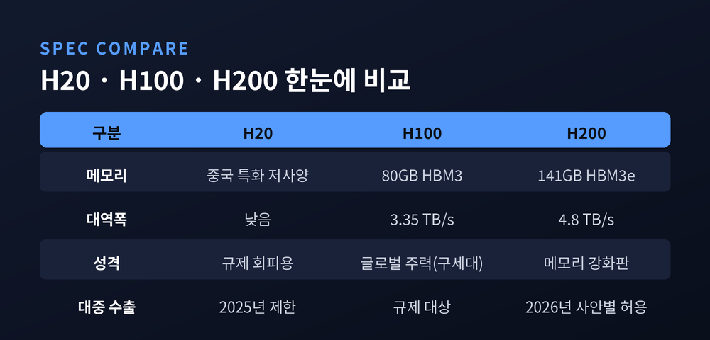
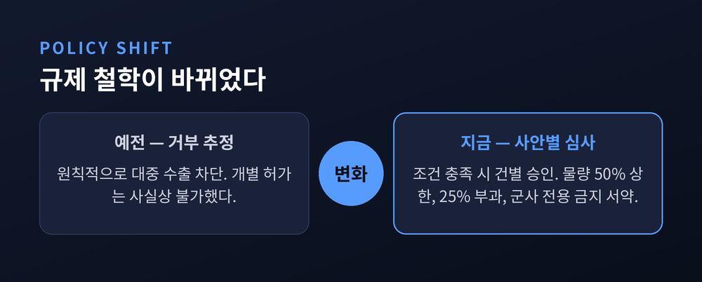
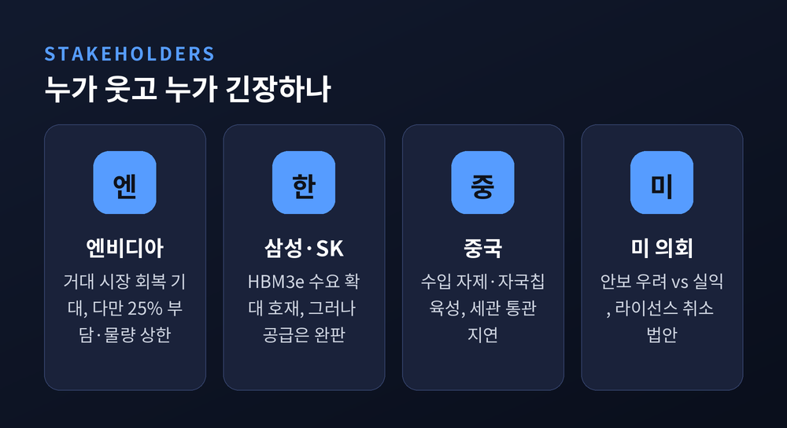
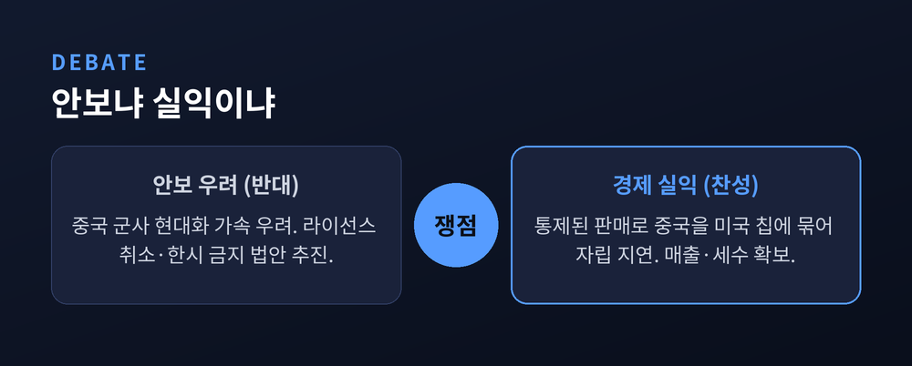

엔비디아 H200 중국 수출 공식 허용 — 미중 반도체 규제 전환 정리
이번 글에서는 미국이 엔비디아 H200의 중국 수출을 허용한 결정을 정리해 보겠습니다. 무엇이 허가됐고, 왜 중요한지, 누가 웃고 누가 긴장하는지를 차례로 짚겠습니다. 결론부터 말씀드리면, 문은 열렸지만 아직 물건은 거의 넘어가지 않았습니다.

무슨 일이 있었나
미 상무부가 엔비디아의 고성능 AI 가속기 'H200'을 중국과 홍콩에 팔 수 있도록 허가했습니다. AI 가속기는 챗봇과 대규모 인공지능 모델을 굴리는 데 쓰이는 핵심 반도체입니다. 그동안 미국은 이 칩이 중국의 군사·안보에 쓰일까 우려해 수출을 막아 왔습니다.
핵심은 심사 기준이 바뀐 것입니다. 산업안보국(BIS)은 H200에 대한 대중 수출 심사를 '거부 추정'에서 '사안별 심사'로 전환했습니다. 예전엔 원칙적으로 막고 봤습니다. 지금은 건별로 따져 조건이 맞으면 열어 줍니다.
시점은 한 번에 결정된 것이 아니라 단계적으로 진행됐습니다. 2025년 12월 트럼프 대통령이 "안보가 유지되는 조건이라면 판매를 허용하겠다"고 밝혔습니다. 2026년 1월 BIS가 규칙을 확정했고, 5월에는 알리바바·텐센트·바이트댄스·JD닷컴 등 중국 주요 기술기업 약 10곳에 구매가 허가됐습니다. 기업당 한도는 최대 7만 5,000개입니다.
7월 14일, 제프리 케슬러 상무부 산업안보 담당 차관이 의회 청문회에서 이를 공식화했습니다. 다만 그는 "실제 출하는 극소량"이라고 덧붙였습니다. 승인된 라이선스 규모는 약 100억 달러에 이르지만, 손에 쥔 물량은 아직 미미하다는 뜻입니다.
구매는 엔비디아에서 직접 사거나, 공인 유통사인 레노버와 폭스콘을 통해 하도록 했습니다. 허가는 났고 계약도 오갔지만, 실제로 칩이 중국 데이터센터에 꽂히기까지는 아직 갈 길이 남았습니다.

H200은 어떤 칩인가
H200은 엔비디아가 만든 데이터센터용 AI 가속기입니다. 메모리는 141GB HBM3e, 대역폭은 초당 4.8테라바이트입니다.
바로 앞 세대인 H100과 비교하면 차이가 뚜렷합니다. H100은 80GB HBM3에 대역폭 3.35테라바이트였습니다. H200은 메모리 용량이 약 76%, 대역폭이 약 43% 늘었습니다.
흥미로운 점은 연산 코어 자체는 H100과 같은 호퍼 설계라는 것입니다. 바뀐 것은 메모리입니다. 더 크고 빠른 HBM3e를 얹어 몸집을 키웠습니다. 큰 AI 모델을 다룰 때는 이 메모리 여유가 곧 성능으로 이어집니다.
그동안 중국에는 저사양 칩인 'H20'만 열려 있었습니다. H20은 미국의 수출 규제 선을 넘지 않으려고 성능을 낮춰 만든 중국 전용 칩입니다. 그마저도 2025년 들어 대중 수출이 사실상 막혔습니다.
H200은 그 H20보다 성능이 약 두 배 앞섭니다. 규제를 피하려고 낮춰 만든 칩 대신, 훨씬 강한 칩의 문이 열린 셈입니다. 큰 언어모델을 학습하고 추론하는 데는 이 격차가 결코 작지 않습니다.

규제는 어떻게 바뀌었나
미국은 2022년 이후 첨단 AI 반도체의 중국 수출을 단계적으로 조여 왔습니다. 2025년 초에는 중국 전용 칩이던 H20까지 규제 대상에 넣었습니다.
H200은 원래 사실상 수출 불가였습니다. '거부 추정'이 원칙이었기 때문입니다. 이번 전환의 핵심은 이 원칙을 '사안별 심사'로 바꾼 데 있습니다.
조건은 붙었습니다. 중국 수출량은 엔비디아의 미국 판매량 절반을 넘지 못합니다. 엔비디아는 미국 시장에 재고가 충분하다는 점도 함께 인증해야 합니다. 대중 매출에는 25%가 부과되고, 구매 기업은 군사 전용 금지를 서약해야 합니다. 보안 절차를 갖췄다는 점도 입증해야 라이선스가 나옵니다.
접근 방식 자체가 달라졌습니다. 예전엔 '무조건 차단'이었습니다. 지금은 '조건을 걸어 통제하며 판다'입니다. 같은 규제라도 철학이 바뀐 것입니다.

누가 웃고 누가 긴장하나
먼저 엔비디아입니다. 젠슨 황 CEO는 수개월간 백악관을 설득해 왔습니다. 중국은 놓치기 아까운 거대 시장입니다. 다만 25% 부담과 물량 상한 탓에 실익은 생각만큼 크지 않다는 평가도 있습니다.
한국 메모리 업계에는 반가운 소식입니다. H200에는 HBM3e 8단이 들어갑니다. 이 시장은 SK하이닉스가 약 90%를 쥐고 있습니다. 수요의 저변이 넓어지면 SK하이닉스와 삼성전자 모두 파이가 커집니다.
그러나 마냥 웃을 수만은 없습니다. SK하이닉스는 이미 2026년 물량이 사실상 완판이라, 중국발 수요를 다 받아내기 어렵습니다. 오히려 공급 여력이 있는 삼성전자가 대안 공급자로 부각될 수 있다는 관측이 나옵니다.
정작 미묘한 쪽은 중국입니다. 미국은 문을 열었지만, 베이징은 오히려 자국 기업에 H200 주문 자제를 권하고 있습니다. 세관에서 통관이 막히기도 했습니다. 화웨이 어센드 같은 자국 칩을 키우려는 계산입니다.
화웨이는 어센드 910C를 2026년에만 60만 개 출하할 계획입니다. 신형 950PR은 저사양 H20보다 특정 연산에서 앞선다는 평가도 받습니다. 베이징은 2030년까지 반도체 자립에 500억 달러 이상을 쏟아붓고 있습니다. 중국 AI칩 시장은 2030년 670억 달러 규모로 커질 전망이라, 자립 유인이 그만큼 큽니다.

안보냐 실익이냐
이 결정은 미국 안에서도 논쟁적입니다.
반대 목소리는 주로 안보를 겨냥합니다. 엘리자베스 워런 등 일부 의원과 전직 안보 당국자 매트 포틴저는 "H200 판매가 중국의 군사 현대화를 가속한다"고 경고합니다. 일부 의원은 기존 라이선스를 되돌리는 법안까지 추진하고 있습니다.
찬성 논리는 결이 다릅니다. "통제된 판매가 오히려 중국을 미국 칩에 묶어 둔다"는 것입니다. 자국 생태계 자립을 늦추는 효과가 있고, 경제적 실익도 챙길 수 있다는 주장입니다.
한편에서는 H200 다음 세대인 블랙웰까지 새어 나갈 통로가 열릴 수 있다는 우려도 제기됩니다. 한 번 문을 열면 그 문을 다시 좁히기가 쉽지 않다는 걱정입니다.
어느 쪽도 완벽한 답은 아닙니다. 막으면 중국의 자립을 재촉하고, 열면 군사 전용 위험을 감수해야 합니다. 결국 '얼마나 통제하며 여느냐'의 문제로 좁혀집니다.

끝으로 한 가지만 덧붙이겠습니다.
이번 결정으로 미국의 대중 반도체 정책은 '차단'에서 '관리된 개방'으로 한 걸음 옮겨 갔습니다. 그러나 허가와 실제 출하 사이에는 여전히 큰 틈이 있습니다. 미국은 조건을 걸어 열었고, 중국은 자립을 이유로 스스로 문을 좁히고 있습니다.
H200이 실제로 중국 데이터센터를 채울지, 아니면 상징으로만 남을지. 그 답은 워싱턴의 발표장이 아니라, 베이징의 통관 창구에서 먼저 드러날지도 모릅니다.
※ 본 글은 공개 보도자료·기사(BIS, CNBC, 전자신문, 이투데이, ZDNet Korea, 서울경제, Tom's Hardware, Fox News, CFR 등)를 교차검증해 정리한 뉴스 해설입니다. 수치·일자는 발표 시점 기준입니다.